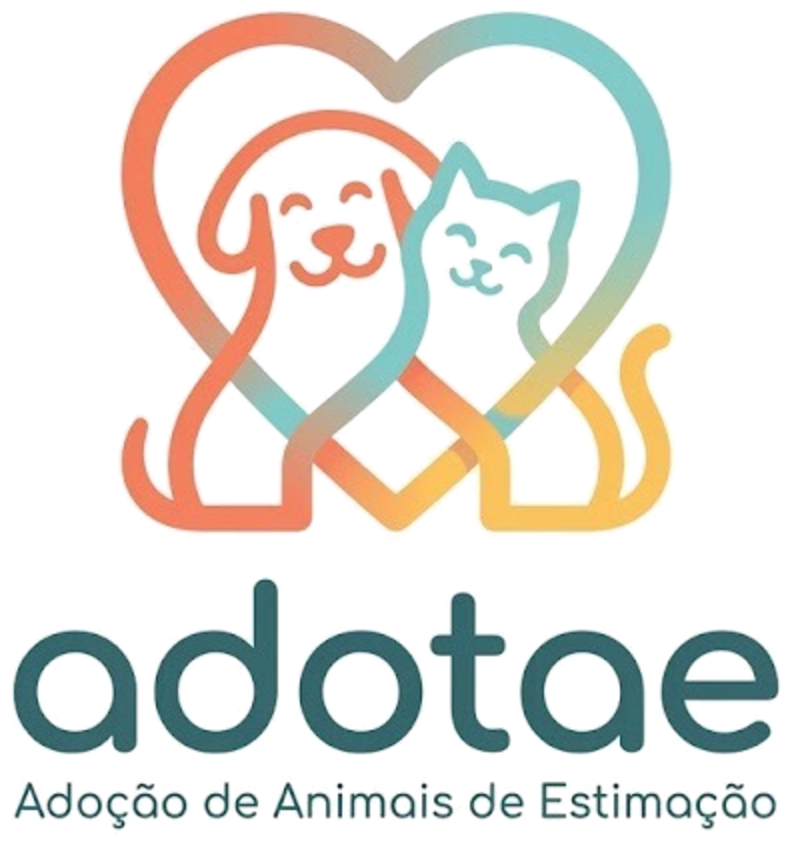

Adotaê · Proposta para revisão
Ícone do app
O logo final é horizontal (marca + “adotae” + slogan) e não cabe num quadrado. Para o ícone, usei só a marca (coração com cão e gato), sem texto, centralizada dentro da área segura: ocupa cerca de 52% do quadrado, para caber no círculo de 66% que o Android preserva no ícone adaptativo (linha tracejada) e ficar longe dos cantos arredondados do iOS. Ainda não apliquei em nenhuma tela.
{{ o.id }}
{{ o.nome }}
{{ o.nota }}
Na tela inicial do celular
{{ g.label }}
Logo completo (já aplicado no app)
Nos cabeçalhos (Início, Lista de animais, Login) entrou a marca sem texto, no mesmo tamanho do símbolo anterior, sobre fundo branco. O logo completo fica reservado para usos maiores, como splash e materiais de divulgação.
